Cette plateforme est actuellement en cours de développement et permettra aux utilisateurs de publier et consulter des annonces dans différents domaines : emploi, vente de produits (voitures, téléphones, etc.) et location de biens (maisons, appartements). L’objectif est d’offrir une alternative plus organisée et fiable aux échanges informels sur les réseaux sociaux comme WhatsApp ou Facebook, en centralisant toutes les annonces sur une seule plateforme accessible et simple d’utilisation.
Dans le cadre de notre formation en Génie Logiciel et Administration des Réseaux (GLAR), nous avons conçu une poubelle intelligente automatisée basée sur un microcontrôleur ESP32.
Ce système permet d’ouvrir et de fermer automatiquement le couvercle sans contact physique, grâce à un capteur à ultrasons. Il s’inscrit dans une logique d’hygiène et d’innovation inspirée de l’Internet des Objets (IoT).
La poubelle collecte également des données environnementales (température et humidité) et les transmet vers une interface web accessible à distance.
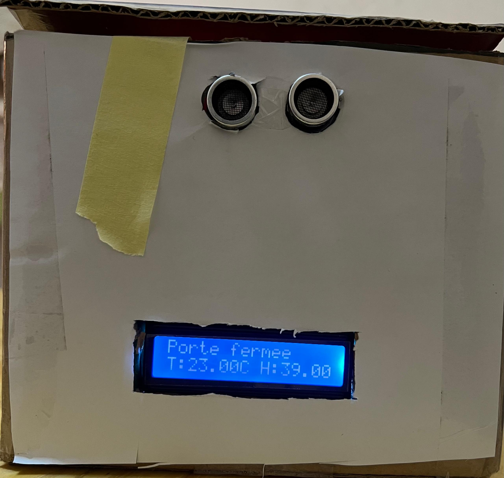
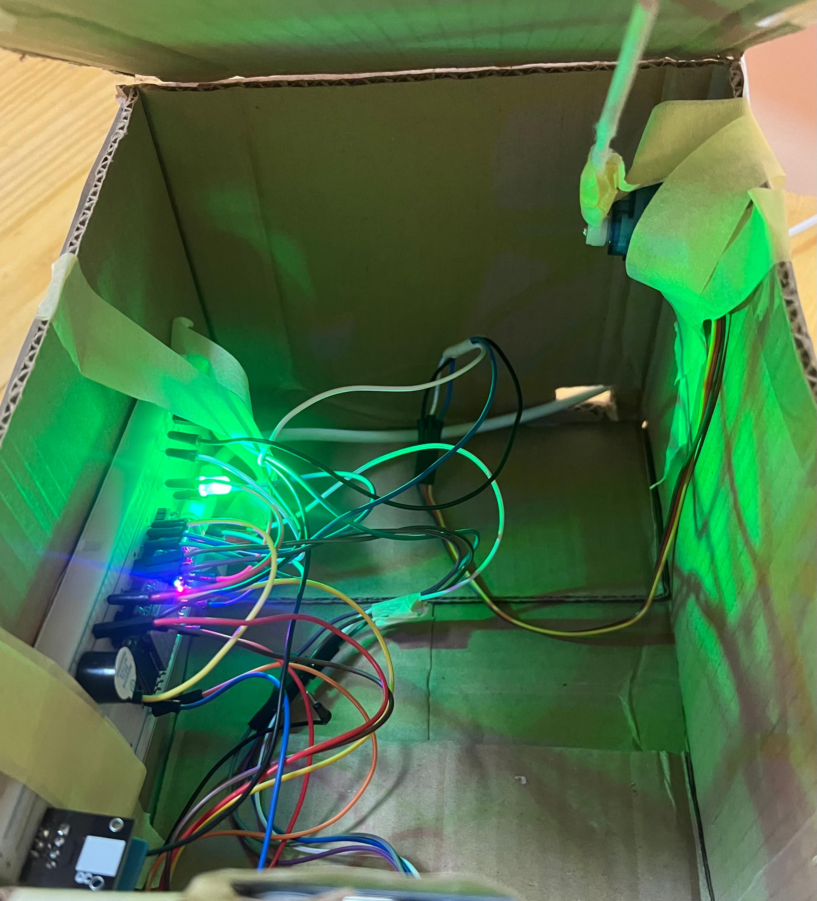
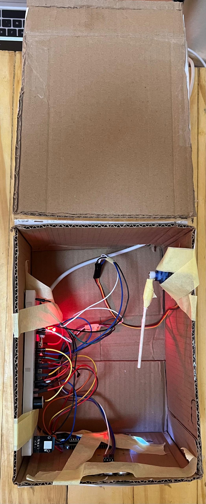
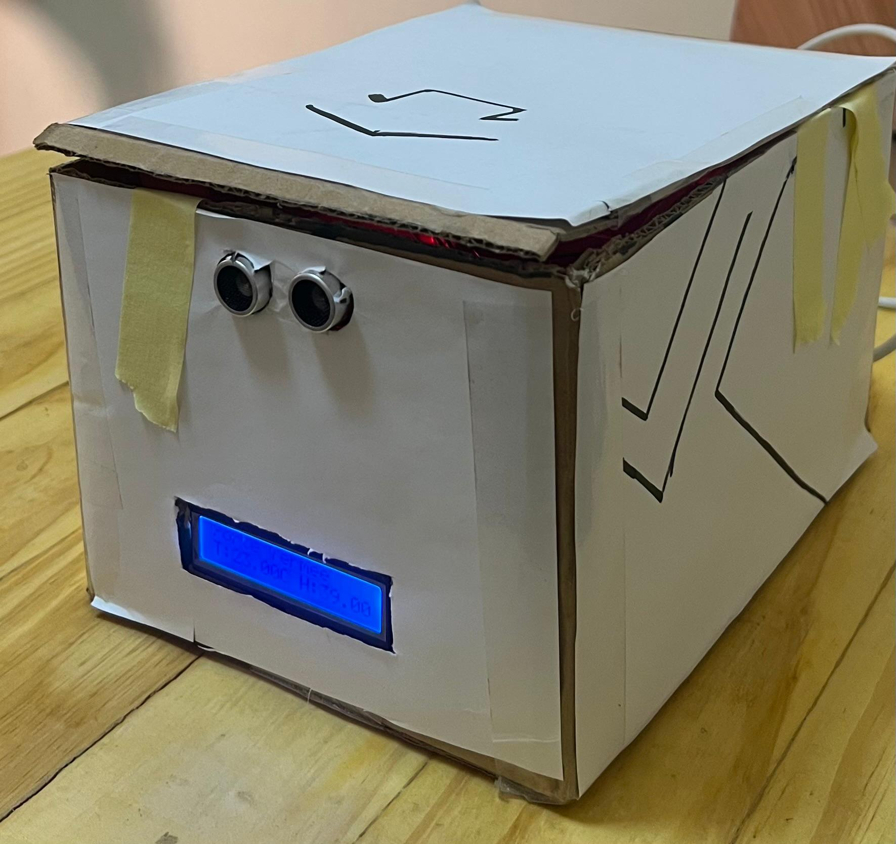
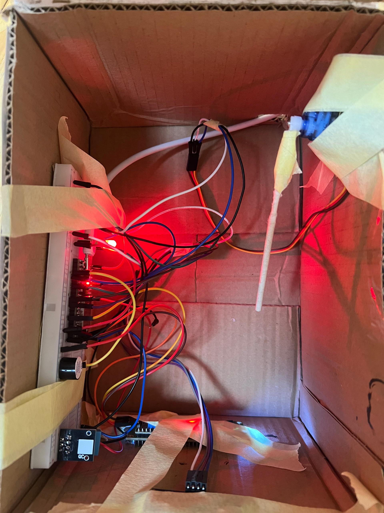
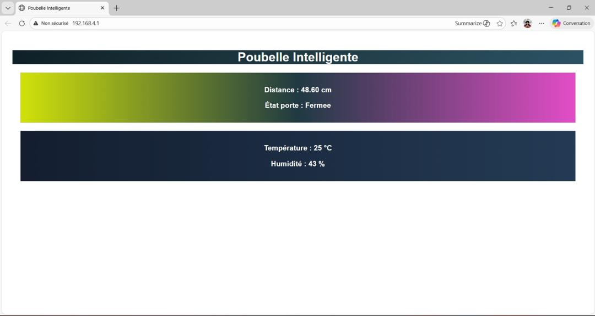
Conception d’affiches visuelles créatives inspirées de l’univers LEGO, avec un accent sur l’harmonie des couleurs, la mise en page et la clarté du message. Ce projet m’a permis de développer mon sens du design, de la composition graphique et de la présentation visuelle.
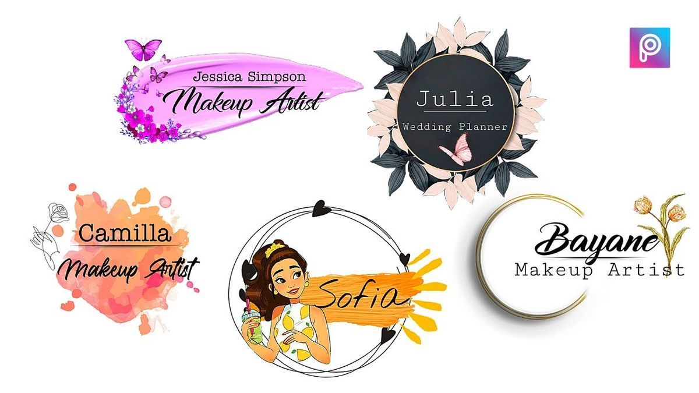
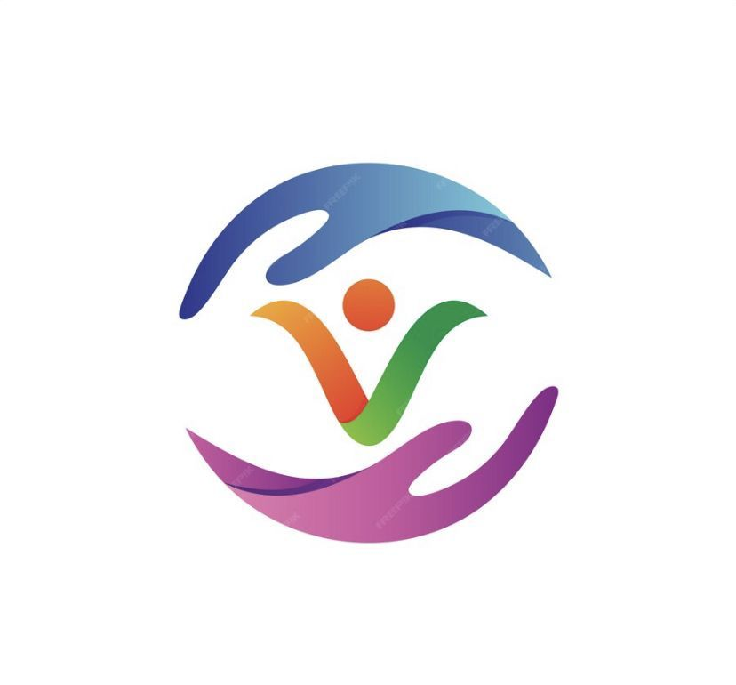
Application développée en langage C permettant de gérer un répertoire téléphonique. Ce projet a été réalisé dans le cadre de ma formation en Génie Logiciel.
Le système permet d’ajouter, modifier, rechercher, afficher et supprimer des contacts à travers un menu interactif.
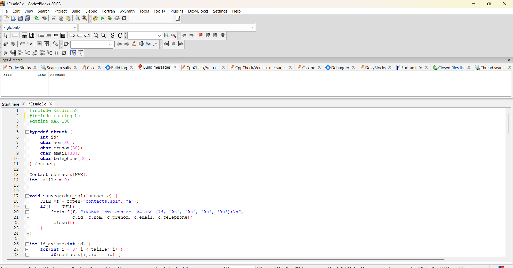
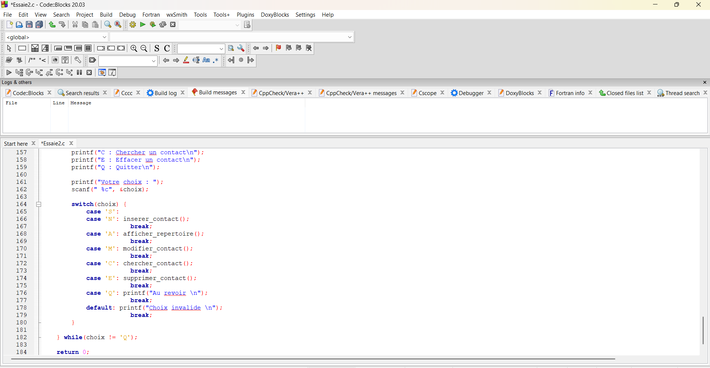
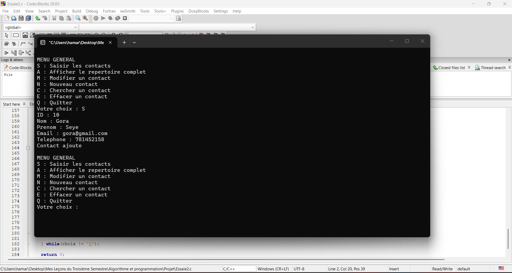
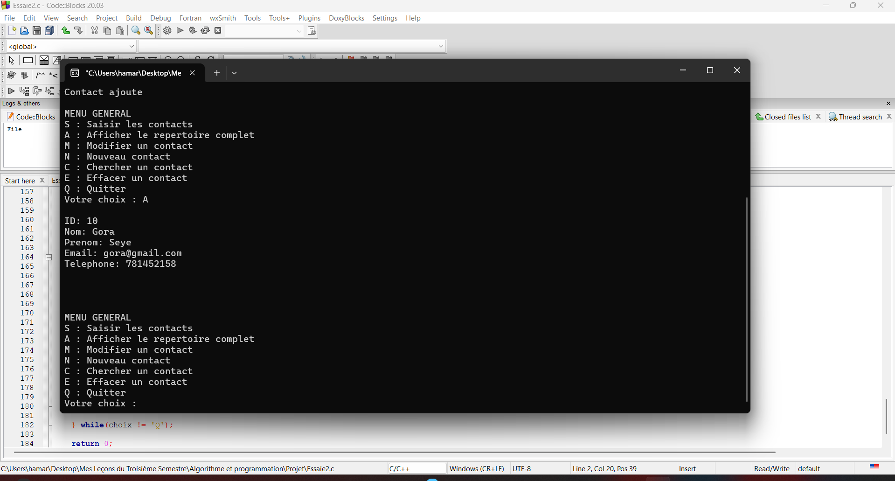
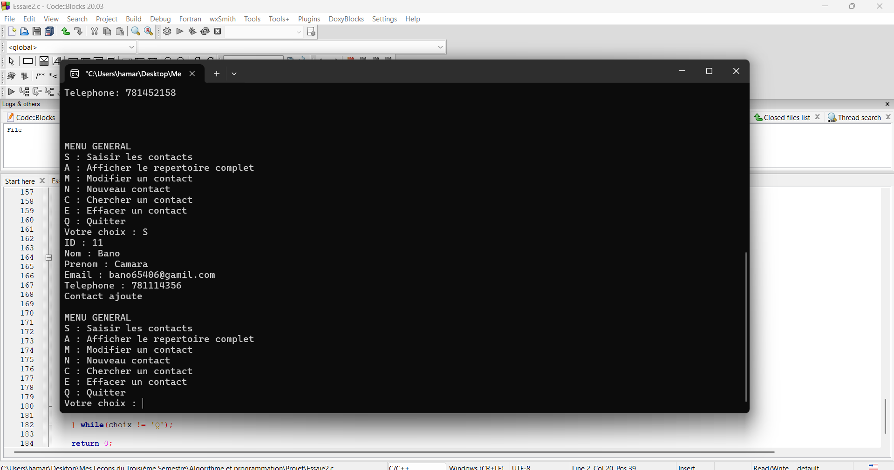
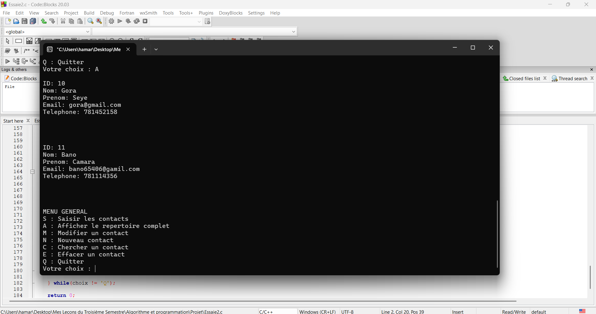
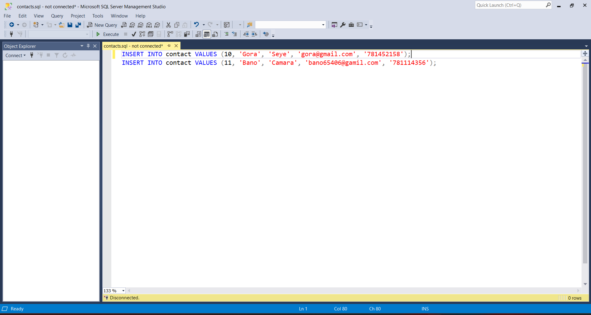